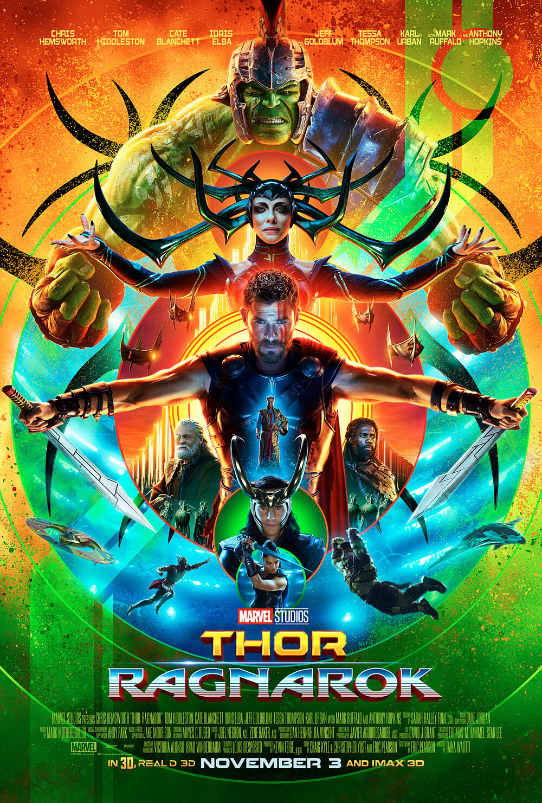
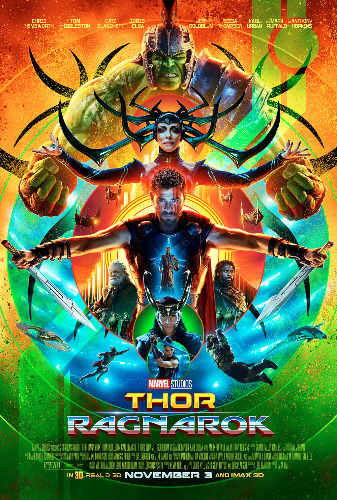

Iron Man 3
In Iron Man 3, Tony Stark wrestles with the ramifications of the events of The Avengers during a national terrorism campaign on the United States led by the mysterious Mandarin. After the release of Iron Man 2 in May 2010, director Favreau chose not to return for a third film.
Gurdians Of Galaxy 2
Gurdians Of Galaxy 2 (retroactively referred to as Guardians of the Galaxy Vol. 2) is a 2017 American superhero film based on the Marvel Comics superhero team of the same name. Produced by Marvel Studios and distributed by Walt Disney Studios Motion Pictures, it is the 10th film in the Marvel Cinematic Universe (MCU)
Thor Ragnarok
Thor Ragnarok is a 2017 American superhero film based on the Marvel Comics character Thor, produced by Marvel Studios and distributed by Walt Disney Studios Motion Pictures. ... In Thor: Ragnarok, Thor must escape the alien planet Sakaar in time to save Asgard from Hela and the impending Ragnarök.
Spider-Man
It is the sequel to Spider-Man: Homecoming (2017) and the 23rd film in the Marvel Cinematic Universe (MCU). ... In the film, Parker is recruited by Nick Fury and Mysterio to face the Elementals while he is on a school trip to Europe.